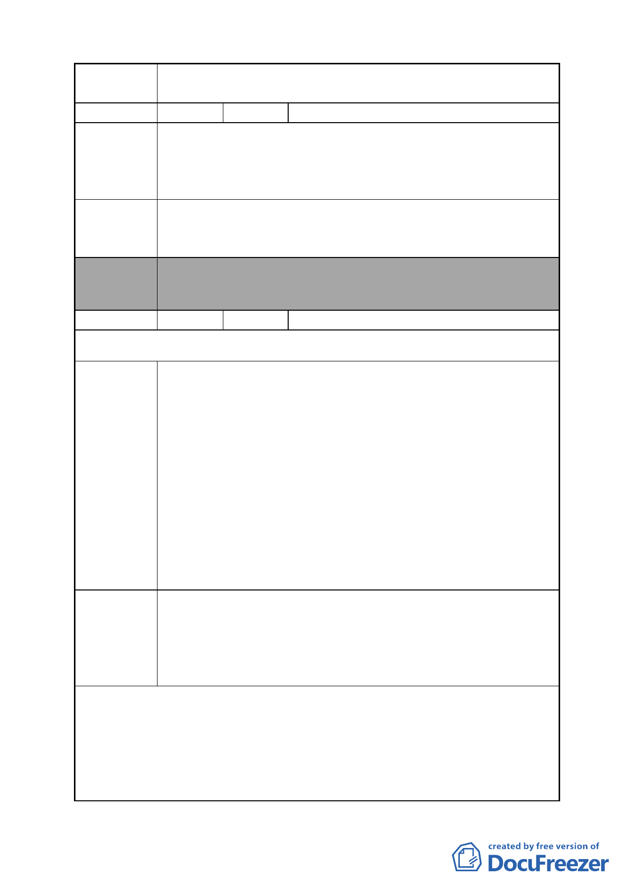

案 名 變更臺北市南港區鐵路地下化沿線土地主要計畫案
編號
陳情理由
建議辦法
委員會
決議
1 陳情人 丹福文具企業有限公司
1.南港區向陽路 84 號座落地點原為特商區，實無法接受重編
再回饋之事實。
2.本區為 30 米向陽路邊住戶，交通、辦公均非常便利，且購
入成本也較高，無法接受等同之回饋比例。
為配合執行，雖勉強同意，但須建立在較優的條件下，例如
較少之回饋比例，及較高之補償金額。否則我們願留在原位
置，不接受重編。
本案除文字誤繕應再作修正外，其餘依市府本次會議所送修
正計畫書內容通過。
編號
2 陳情人 聖嘉興企業股份有限公司
第 1 次陳情
陳情理由
建議辦法
本公司原依據民國 90 年「修訂台北市南港區都市計畫（主要
計畫）通盤檢討案」內容，自 94 年 6 月依法申請自擬細部計
畫並配合變更主要計畫至今，其間經過多次審查協商會議，
已獲得台北市政府都市發展局同意協助辦理都市計畫法定程
序及由 該局提供涉及整體及立體連通部份之協助等會議結
論在案。
然而日前台北市政府公告之「變更台北市南港地區鐵路地下
化沿線土地主要計畫案」中，固將本公司土地所處街廓劃為
商業區（特），但卻將本公司原申請自擬細部計畫之送件方案
除開發後之商業空間外，尚依都市發展局內審意見，以「南
港車站週邊缺乏大型開放廣場」，將部份公共設施以廣場形式
留設於本基地西側，以利車站人潮之散，詳細內容如附圖。
附圖之細部計畫方案為府我雙方經多次討論後達成共識之內
容。強烈建議此次「變更台北市南港地區鐵路地下化沿線土
地主要計畫案」仍須將本公司原提出申請且已獲得台北市政
府都市發展局同意協助辦理都市計畫法定程序之細部計畫內
容，做為此次變更作業之依據。
- 16 -